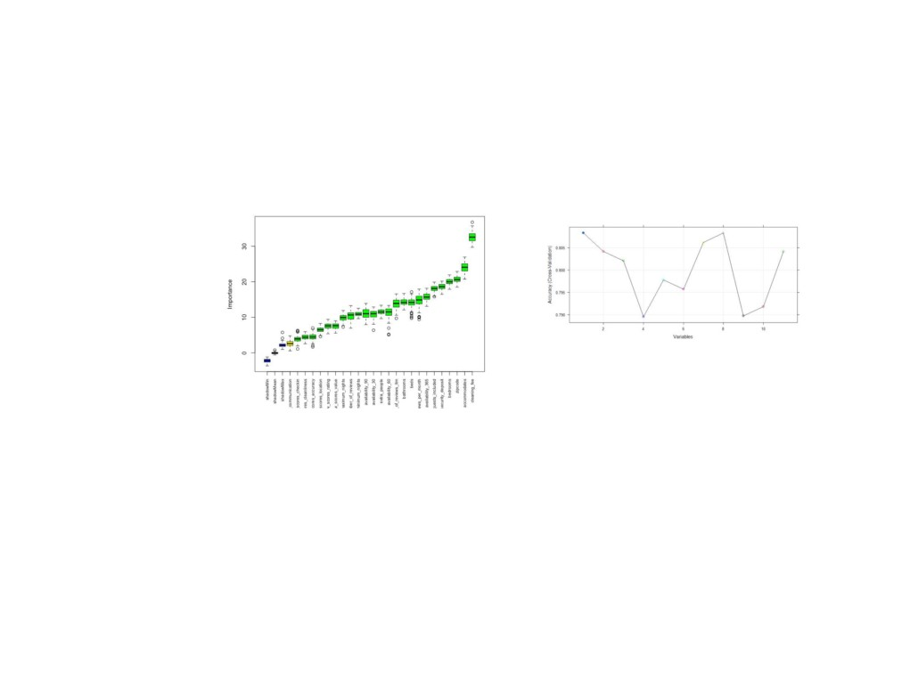
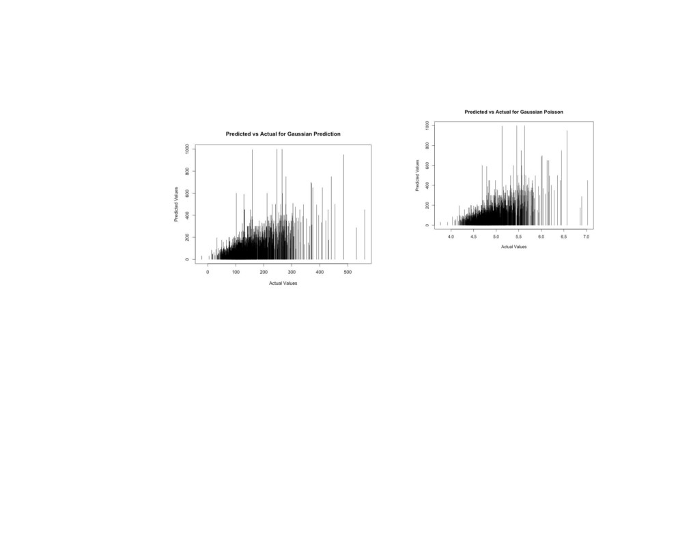
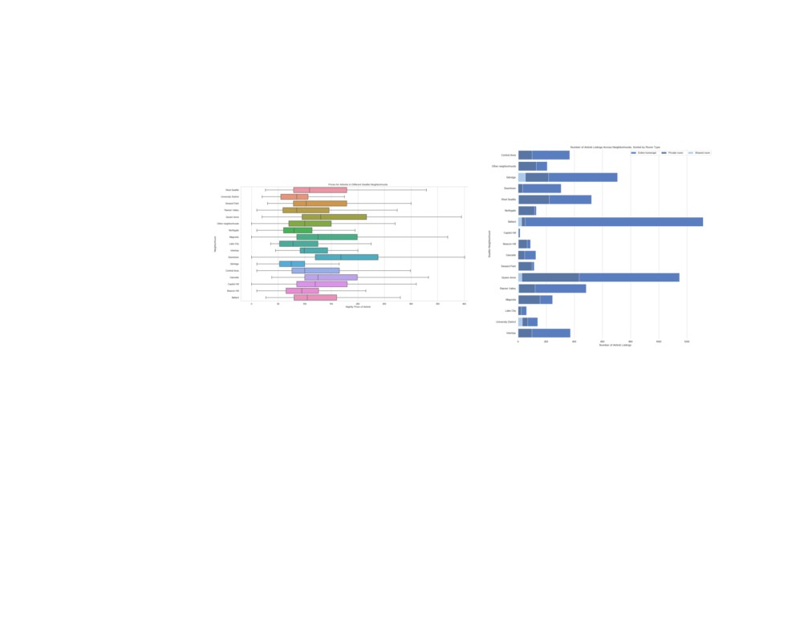
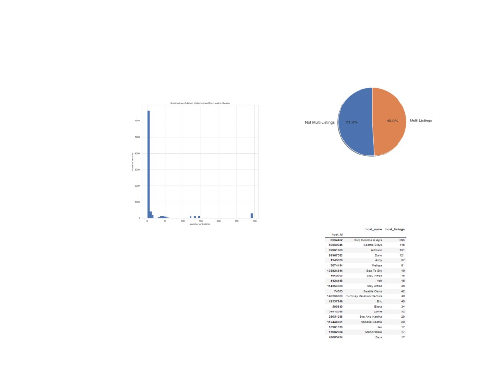
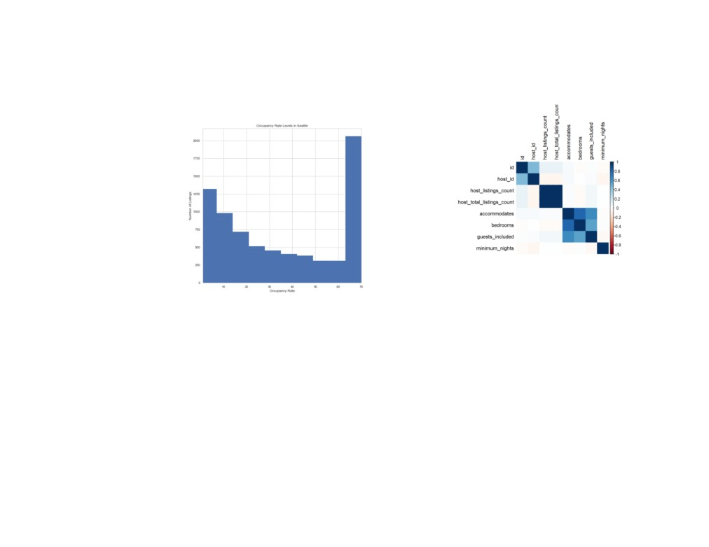

Examining the Commercialization of
Airbnb in Seattle
Victoria Huynh
Pooja Ramanathan
commercialization. However, ultimately, our predictive
University of Washington
University of Washington
model’s accuracy was not high due to a lack of
Seattle, Washington
Seattle, Washington
qualitative data available in the dataset.
huynhvic@uw.edu
ps2112@uw.edu
Introduction
Jill Nguyen
Shiva Rithwick
The problem we are addressing in our project is the
University of Washington
University of Washington
commercialization of Airbnb, particularly in the Seattle
Seattle, Washington
Seattle, Washington
area. We are aiming to find out what factors of an
janguy@uw.edu
rithwick@uw.edu
Airbnb property are indicators of whether the property
is being used as a commercialized venture or not. Our
Abstract
motivation for this undertaking is due to the potential
Home-sharing rentals are a rapidly rising market in
of distortion of the original intent of Airbnb through
urban cities today. Consequently, this market is
commercialization. Airbnb is meant as a means for
changing the state of housing in these urban areas. In
homeowners with an extra room to spare to
this paper, we assess the level of commercialization of
momentarily offer their home to lodgers. Thus, a host
the Airbnb market in Seattle’s neighborhoods and
who rents out an empty property for a long-term stay
attempt to predict whether or not listings are being
is essentially running a hotel or a lease rather than
used for commercial purposes. Using an open-source
merely sharing their home. The usage of Airbnb for
dataset from InsideAirbnb, we looked into the Airbnb
commercial ventures has been found to be damaging to
and Seattle housing market from 2011 to 2019. We
local communities, as we will cover in the next section.
discovered that the median price for the Downtown
We hope to find the degree to which commercialization
neighborhood, a tourist hub, was the highest which
persists in Seattle and whether we can make
could be indicative of commercialization. We also found
predictions regarding whether a property is a
out that the majority of the listings were entire
commercial venture or not.
house/apartment and multi-listings, which is another
indication of commercialization. For the prediction,
Related Works
Poisson regression and negative binomial regression
Various studies have been conducted to analyze the
was used to predict the commercialization of a listing. A
commercialization of Airbnb and its effect on the
higher number indicated a higher chance of
housing markets surrounding their listings. One report
usurped by short-term rentals. (Wachsmuth) Key
from the Economic Policy Institute determines that
findings from their research period found that New
“internet-based service firms,” or IBSFs, such as Airbnb
Yorkers as a whole were paying $380 more in rent due
impose costs on our economy that likely outweigh any
to reduction of housing supply, and that there were
benefits. With Airbnb, property owners can “diversify
13,500 units of lost housing in the city through Airbnb.
their potential streams of revenue,” travelers have an
“increased supply of short-term rentals available,” and
Another study, from The Urban Media Lab, also
a city or town gains “extra economic activity” from
concludes that Airbnb has a harmful impact on local
increased visitors (Bivens). These benefits are
communities through both gentrification and what they
documented by Airbnb as evidence of the company
dub as “Disneyification,” or the danger of a city’s
helping communities. However, Airbnb also results in
historical and cultural identity being consumed by
“higher housing costs for city residents” when
tourism. In essence, "the growth of short-term rentals
properties are converted into short-term
is closely tied to the broader financialisation of housing
accommodations, a “loss of tax revenue,” and
that makes housing a commodity, erodes the
increased “externalities imposed on neighbors,” such as
neighborhood identity, attracts new investors for
noise or building facility usage (Bivens). The report
buying or developing more and more units, which in
proceeds to do a cost-benefit analysis of all these
turn increases the scarcity of housing, prompts
factors, concluding that Airbnb should be held just as
landlords to raise rent, threatens community bonds and
responsible as other lodging providers through stricter
stretches neighborhood services". (Bernardi) The study
policies and taxation.
concludes that in order to counteract these damaging
processes, cities need to restrict and regulate Airbnb
One dichotomy in particular brought up in the Economic
hosts to ensure their activity does less to threaten local
Policy Institute’s report is that while Airbnb claims to
housing markets.
have a positive impact on local neighborhoods and their
residents by bringing in tourism, the reality of the
platform's presence is that it raises rental prices in the
area, pushing residents out. This is because as long as
consumers are incentivized to rent a room on Airbnb as
opposed to a hotel, housing owners will be inclined to
make Airbnb listings instead of renting to local
residents. This increases demand for long-term rentals,
and thus increased housing prices. One case study
observing this phenomenon was conducted by McGill
University researchers, who found that areas in New
York such as Harlem and Bed-Stuy, which contained
lower-income housing, were seeing those apartments

Methods
regarding the data that the values of the predictors
have some kind of order to them, that is, they’re either
Feature Selection
increasing or decreasing. These Spearman and Kendall
Coefficients helps us determine if the predictor has a
non-linear relationship with the response variable.
Figure 2: Cross-validation of variables.
We then moved on to Wrapper Methods. In wrapper
methods, we try to use a subset of features and train a
model using them. Based on the inferences that we
Figure 1: Selecting the most important features.
draw from the previous model, we decide to add or
remove features from your subset. The problem is
We tried to understand the type of feature selection
essentially reduced to a search problem. These
method required for our dataset and the research
methods are usually computationally very expensive.
question we were trying to tackle. We were weighing
We used the Recursive Feature Elimination Method to
the performance of our model by reducing the number
obtain the best subset of the feature variables. It is a
of features using filtering methods and wrapper
greedy optimization algorithm which aims to find the
methods. We performed various filtering methods such
best performing feature subset. It repeatedly creates
as Pearson's correlation, LDA, ANOVA but were
models and keeps aside the best or the worst
unsuccessful in deducing any useful information and
performing feature at each iteration. It constructs the
our values to be modeled did not fall under any
next model with the left features until all the features
particular distribution. We took the liberty to make few
are exhausted. It then ranks the features based on the
simplifications regarding the data for the purpose of
order of their elimination. We used Recursive Feature
modeling. To perform Spearman and Kendall-Tau
Elimination Method instead of Forward Selection
Correlation Analysis, we simplify the information
method because we learned that the former provides
more accurate and detailed feature selection algorithm,
Random Forest
and we wanted to experiment a new method as well, in
fact, it turned out very successful.
We tried to make our output variable that is the price of
the Airbnb listing categorical by classifying the
KNN Algorithm
continuous values into categories based on their range.
We did this to perform Decision tree algorithms. A
KNN can be used for both classification and regression
decision tree is a type of supervised learning algorithm
predictive problems. However, it is more widely used in
(having a pre-defined target variable) that is mostly
classification problems in the industry. What is KNN
used in classification problems. In this technique, we
Algorithm? Let’s assume we have several groups of
split the population or sample into two or more
labeled samples. The items present in the groups are
homogeneous sets (or sub-populations) based on most
homogeneous in nature. Now, suppose we have an
significant splitter/differentiator in input variables. But
unlabeled example which needs to be classified into one
soon, we started running into hurdles and the model
of the several labeled groups. We do that using KNN
was not effective at all. Overfitting is one of the most
Algorithm, k nearest neighbors is a simple algorithm
practical difficulties for decision tree models. We tried
that stores all available cases and classifies new cases
simplifying this problem by setting constraints on model
by a majority vote of its k neighbors. This algorithm
parameters and pruning, but the parameters were not
segregates unlabeled data points into well-defined
accurate and we had a lot of missing data points. We
groups.
were missing data on a lot of essential parameters, and
the ones that were available were more qualitative and
The next step was to choose the K value. Choosing the
contained a lot of text. While working with continuous
number of nearest neighbors i.e. determining the value
numerical variables, decision tree loses information
of k plays a significant role in determining the efficacy
when it categorizes variables in different categories. We
of the model. A large k value has benefits which include
decided that categorizing them based on the price
reducing the variance due to the noisy data; the side
range, we were oversimplifying a lot of information
effect is developing a bias due to which the learner
regarding the neighborhood the listing was at and the
tends to ignore the smaller patterns which may have
predictive model was not using the essential data as we
useful insights. Our modeled suffered the same
expected it to. We finally decided to discontinue this
problem and the predicted values were not close to the
model as well.
actual values and were highly biased because different
neighborhoods had different price trends and inflictions
due to economic changes and other reasons. We
decided to not move forward with the KNN regressor
after trying out numerous K values and their predictive
accuracies.

Poisson Regression
Figure 4: Predicted vs Actual for Gaussian Poisson
If the conditional distribution of the outcome variable is
over-dispersed, the confidence intervals for Negative
Figure 3: Predicted vs Actual for Gaussian Prediction
binomial regression are likely to be narrower as
compared to those from Poisson regression. Thus, our
We decided to choose Poisson Regression because it is
outputs were very similar, and Poisson regression
useful for predicting an outcome variable representing
outperformed negative binomial regression by a very
counts from a set of continuous predictor variables. We
narrow margin.
performed the analysis using Negative Binomial
Regression as well, Negative binomial regression can be
used for over-dispersed count data, that is when the
conditional variance exceeds the conditional mean.
However, Negative binomial regression can be
considered as a generalization of Poisson regression
since it has the same mean structure as Poisson
regression and it has an extra parameter to model the
over-dispersion.

Results
Through our explorative data analysis we found a lot of
trends and observed relationships.
Figure 5: A box plot graph of Airbnb prices for Seattle
neighborhoods.
When we divided the listing in Seattle by
neighborhoods we found out that the median price for
Figure 6: A bar graph showing the distribution of Airbnb
the Downtown neighborhood is highest, while the
property types in neighborhoods.
lowest median price seems to be in Delridge. Since
Downtown Seattle is a hub for tourist activity, this
Next, we explored the distribution of room types in
could be indicative of commercialization.
Airbnbs across neighborhoods - It appears that for
nearly all neighborhoods, the “entire house/apartment”
room type makes up the bulk of listings. Additionally,
Ballard and Queen Anne appear to have the most
listings overall, which is surprising considering their
average prices. We also can break down the pricing for
the various room types, and unsurprisingly, the entire
house or apartment listings are much more expensive,
which means they would be more lucrative for their
owners.

Figure 8: A pie chart showing multi-listing properties vs. non
multi-listing properties.
We found that the top hosts have a shocking number of
listings, providing evidence towards their Airbnb account being
run like a business. Many of the host names seem to resemble
business names as well, making their true purposes evident.
Figure 7: A histogram showing the distribution of Airbnb
listings per host.
We also broke down the number of listings held by
Airbnb hosts in Seattle. While the majority of owners
appear to only have a handful of listings, there are also
quite a few hosts who own dozens or more properties.

Figure 10: A correlation heat map.
We also made correlation heat-maps to uncover various
trends and correlations. From our heat maps we
realized that bedrooms, guests included and
Figure 9: A histogram showing occupancy rate levels in
accommodates are all positively correlated with each
Seattle.
other, we realized that all the features maximum nights
and all the minimum nights are highly correlated with
Based on the average number of reviews per month
each other, this made us realize that these might be
and nights spent in a listing per year, we calculated
redundant features and we have to only select one
occupancy rates for properties in Seattle. We followed
from each of the categories to increase accuracy of our
InsideAirbnb’s justification for capping the occupancy
model. We also found that the columns availability 30,
rate, as they use “a maximum occupancy rate of 70%
availability 60 and availability 90 are highly correlated
to ensure the occupancy model does not produce
which lead us to eliminate 2 of the 3 features.
artificially high results based on the available data”. It
is clear that there is a downward trend of occupancy
rates for listings, and yet at the peak capacity for
occupancy, the number of listings with high occupancy
skyrockets.
based on a range instead of a single value and we tried
to see if the actual prices fell within the range.
However, our accuracy was not good enough because
we didn’t have enough qualitative or meaningful data.
Discussion
Our results using the models and the data exploration
visualization were more useful to understand the type
of data being collected by Airbnb. We couldn't
successfully build a predictive model for the prices
based on the features that were available to us and the
data points that were missing. However, we saw some
interesting trends and patterns.
As mentioned earlier, the median price for the
Figure 11: Another correlation heat map.
Downtown neighborhood was the highest, which implies
We tried using various predictive algorithms but the
that listings are more commercialized in that area. This
data had too many holes in it and there was no right
makes sense, as it is a hub for tourism.
way to model it because many of their features were
subjective or texts. When data was missing it was
For all neighborhoods, the "entire house/apartment"
missing in chunks which made the idea of using either
room type is the majority of the listings. This implies
a backward or forward fill to replace the wholes in the
that the owner may be using the property for
data set unproductive. The data has many columns that
commercial purposes, as there is no one occupying the
were descriptive and we did not have any data to
home except for short-term renters.
understand the trends in the prices of Airbnb, features
that describe influencers of the prices. So based on the
Another significant insight was the great number of
columns that were provided we tried to create new
multi-listings. Over half of the listings were multi-
columns to see if they had any influence on the price.
listings. This implies that a majority of the listings may
We created a column called commercial_or_not by
be used for commercial purposes. Multi-listings assume
understanding the type of house, and how long they
hosts are buying property to rent out for profit.
were available for staying etc. We were over simplifying
the problem and did not have enough time to
Overall, although there is not a strong implication given
incorporate other datasets such as housing prices in
from our predictive model, our various findings do
Seattle neighborhoods and combine them to
indicate that Airbnb does have a level of
understand the problem better. Our prediction was
commercialization in Seattle. We believe that the city of
Seattle should take more efforts towards regulating
action on them in the future if we want to. We also
services such as Airbnb. For inspiration for such efforts,
better want to understand through machine learning
Seattle can look to the cities we mentioned in our
and predictive algorithms what factors contribute to the
earlier section as examples.
price of a listing. For example, we could perform
sentimental analysis on the reviews for a listing and the
Future Work
host’s description to reveal trends about how the
We wish to develop a categorical predictive model that
description and reviews affect the price of a listing.
can classify listings as either commercial or personal.
Understanding which factors truly contribute to the
This would help users understand how various
price would essentially allow us to understand how to
corporations are taking advantage of the housing
tailor a listing according to the price we might have in
situation to make more money while reduce house
our mind, this would allow for users and hosts to find
availability in crucial parts of the city. If we find out
exactly the homes they are looking for.
which properties are commercial it is easy to take
airbnb-nyc/a-year-later-airbnb-as-racial-
gentrification-tool.html
References
1. Bivens, J. (2019, January 30). The economic costs
and benefits of Airbnb: No reason for local
policymakers to let Airbnb bypass tax or regulatory
obligations. Retrieved from
costs-and-benefits-of-airbnb-no-reason-for-local-
policymakers-to-let-airbnb-bypass-tax-or-
regulatory-obligations/
2. Wachsmuth, David & Weisler, Alexander. (2018).
Airbnb and the Rent Gap: Gentrification Through
the Sharing Economy. Environment and Planning A:
Economy and Space. 10.1177/0308518X18778038.
3. Bernardi, M. (2018, October 02). The impact of
AirBnB on our cities: Gentrification and
'disneyfication' 2.0. Retrieved from
of-airbnb-on-our-cities-gentrification-and-
disneyfication-2-0/
4. A Year Later: Airbnb as a Racial Gentrification Tool
- Inside Airbnb. Adding data to the debate. (n.d.).